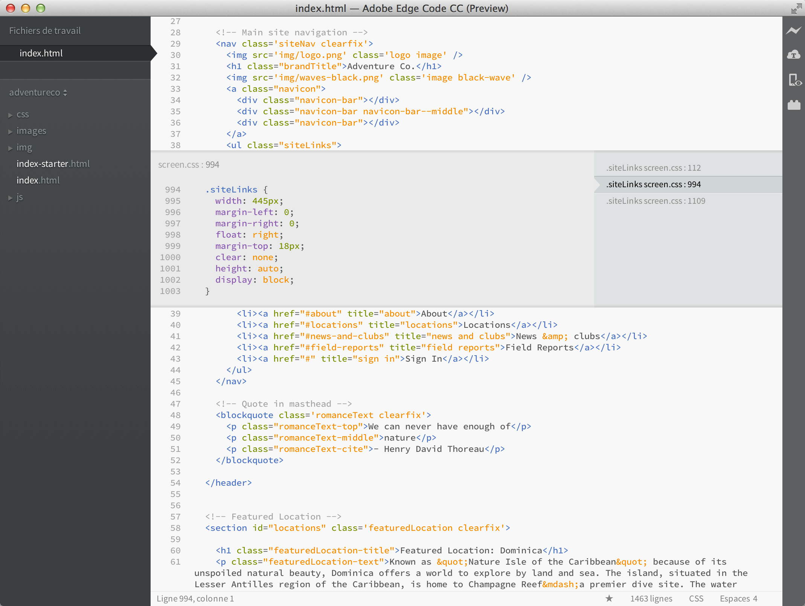

Bienvenue dans cette version préliminaire d’Adobe Edge Code CC, un nouvel éditeur de code léger, adapté au Web de demain et développé sur la base du projet open source Brackets. Nous attachons une grande importance aux normes et cherchons à créer des outils plus adaptés aux langages JavaScript, HTML et CSS ainsi qu’aux autres technologies du Web ouvert. Il s’agit là de notre modeste première contribution.
Edge Code CC se distingue des éditeurs traditionnels, notamment par son écriture en JavaScript, HTML et CSS. Autrement dit, la plupart des utilisateurs d’Edge Code disposent des capacités nécessaires pour modifier et étendre l’éditeur. En fait, nous utilisons Edge Code tous les jours pour son propre développement. Edge Code propose aussi des fonctionnalités uniques, comme l’Edition rapide ou l’Aperçu en direct, que vous ne trouverez pas forcément dans d’autres éditeurs. Pour en savoir plus sur l’utilisation de ces fonctionnalités, poursuivez votre lecture.
Vous ne risquez plus de perdre de vue le contexte en passant d’un document à un autre. Lorsque vous modifiez un fichier HTML, utilisez le raccourci Cmd/Ctrl + E pour ouvrir un éditeur rapide intégré qui affiche l’ensemble du code CSS associé. Peaufinez votre CSS, puis appuyez sur Echap pour revenir au format HTML, ou laissez simplement les règles CSS ouvertes afin qu’elles deviennent partie intégrante de l’éditeur HTML. En appuyant sur Echap en dehors d’un éditeur intégré rapide, tous les éditeurs sont réduits.
Une petite démonstration ? Placez le curseur de la souris sur la balise ci-dessus et tapez Cmd/Ctrl + E. L’éditeur rapide de CSS doit s’afficher en haut. Sur la droite, vous pouvez voir la liste des règles CSS applicables à la balise. Il vous suffit de faire défiler ces règles avec Alt + Haut/Bas pour trouver celle que vous souhaitez modifier. Vous pouvez utiliser le même raccourci pour le code JavaScript afin d’afficher le corps d’une fonction. Pour ce faire, placez le curseur sur le nom de la fonction que vous appelez. Les éditeurs intégrés ne peuvent pas encore être imbriqués. Vous ne pouvez donc utiliser l’édition rapide que lorsque le curseur se trouve dans un éditeur « plein écran ».
Depuis des années, nous pratiquons tous la fameuse technique « Enregistrer/Actualiser » : apporter des modifications à l’éditeur, enregistrer, basculer vers le navigateur, puis actualiser la page pour voir le résultat. Avec Edge Code, cette longue procédure appartient au passé.
Edge Code se connecte en direct à votre navigateur local et transmet vos mises à jour au fur et à mesure que vous les appliquez au code CSS. Des outils accessibles depuis le navigateur permettent certes d’obtenir un résultat similaire, mais avec Edge Code, vous n’avez pas besoin de copier et coller à nouveau le code CSS final dans l’éditeur. Le navigateur lit votre code, mais c’est l’éditeur qui le fait vivre !
Avec Edge Code, vous pouvez facilement visualiser les effets des modifications du code HTML et CSS sur la page. Lorsque vous placez le curseur sur une règle CSS, Edge Code surligne les éléments concernés dans le navigateur. De même, lorsque vous modifiez un fichier HTML, Edge Code surligne les éléments HTML correspondants dans le navigateur.
Si vous avez installé Google Chrome, vous pouvez dès maintenant tester cette fonctionnalité. Cliquez sur l’icône représentant un éclair en haut à droite de la fenêtre Edge Code ou utilisez la combinaison Cmd/Ctrl + Alt + P. Lorsque le module Aperçu en direct est activé sur un document HTML, tous les documents CSS associés peuvent être modifiés en temps réel. L’icône passe du gris au doré une fois qu’Edge Code CC a établi la connexion à votre navigateur. Placez maintenant le curseur de la souris sur la balise ci-dessus. Vous constatez qu’un surlignement bleu apparaît autour de l’image dans Chrome. Utilisez ensuite la combinaison Cmd/Ctrl + E pour ouvrir les règles CSS définies. Essayez de faire passer l’épaisseur de la bordure de 1 px à 10 px, ou de changer la couleur d’arrière-plan de « dimgray » à « hotpink ». Si Edge Code et votre navigateur s’exécutent côte à côte, ce dernier affichera immédiatement les modifications. Plutôt sympathique, non ?A l’heure actuelle, le module Aperçu en direct ne fonctionne que pour le code CSS. Cependant, dans cette version, les modifications apportées aux fichiers HTML et JavaScript sont automatiquement rechargées lorsque vous enregistrez. Nous travaillons activement à la prise en charge du module Aperçu en direct pour les langages HTML et JavaScript. La fonctionnalité Aperçu en direct n’est disponible qu’avec Google Chrome, mais nous souhaitons à l’avenir déployer cette fonctionnalité sur l’ensemble des navigateurs.
Pour ceux d’entre nous qui n’ont pas encore mémorisé les équivalents en couleur des valeurs HEX ou RVB, Edge Code permet d’afficher rapidement et facilement la couleur utilisée. Dans votre code CSS ou HTML, placez simplement le curseur sur n’importe quelle valeur colorimétrique ou dégradé, et Edge Code affichera automatiquement un aperçu de la couleur ou du dégradé. Procédez de même pour les images : placez simplement le curseur sur le lien de l’image dans l’éditeur Edge Code pour afficher une miniature de cette image.
Testez l’aperçu au survol par vous-même : placez le curseur sur la balise en haut du document et appuyez sur Cmd/Ctrl + E pour ouvrir un éditeur rapide CSS. A présent, placez le curseur sur l’une des valeurs de couleur du code CSS. Vous pouvez également tester cette fonctionnalité sur un dégradé : ouvrez un éditeur rapide CSS sur la balise HTML située en haut de la page, puis placez le curseur sur l’une des valeurs de l’image d’arrière-plan. Pour essayer l’aperçu avec une image, placez le curseur sur la capture d’écran insérée plus haut dans le document.
Edge Code propose certaines fonctionnalités des outils et services Creative Cloud directement dans l’éditeur de code. Cette version préliminaire vous donne accès à Edge Web Fonts, une bibliothèque de polices Web gratuites constituée par Adobe, Google et des concepteurs du monde entier. Pour utiliser Edge Web Fonts, ouvrez un fichier CSS, accédez à une règle CSS de type font-family: et sélectionnez l’option « Parcourir les polices Web... » dans le menu déroulant, puis choisissez une police. Lorsque vous avez terminé, cliquez sur l’icône dans l’angle supérieur droit et copiez/collez la balise de script dans votre document HTML.
Vous pouvez également afficher un aperçu de votre contenu directement sur des terminaux avec Edge Inspect. Pour afficher un aperçu avec Inspect, assurez-vous d’avoir installé l’application Edge Inspect, puis cliquez sur l’icône en haut à droite. Activez la navigation synchronisée, exécutez Inspect sur votre périphérique, connectez-le à Edge Code et vous pourrez observer le contenu de votre code HTML/JS/CSS directement sur le terminal. A chaque fois que vous enregistrez une modification, la page affichée par le terminal s’actualise automatiquement.
Vos commentaires sont précieux pour l’équipe Edge Code CC, et vous pouvez participer au développement de différentes manières. Le forum Edge Code CC vous permet d’apporter de nouvelles idées, ou d’obtenir de l’aide en cas de problème. Edge Code CC est basé sur Brackets : vous pouvez donc contribuer directement à Brackets et voir le résultat de ces contributions dans Edge Code CC. Vous avez aussi la possibilité de développer des extensions pour Edge Code CC. Vous pouvez même, tout simplement, vous contenter de parler d’Edge Code CC autour de vous.